Chapter 9 Plotting “Spatial” Data with ggplot
Note that if you, the student, wish to run all the code yourself, you should download the inputs directory as a zipped file by going here with a web browser and then clicking the big “Download” button on the right. Once you have downloaded that, unzip it and put the whole inputs directory in the current working directory where you are working with R.
Today we are going to take a very cursory look at R’s facilities for handling spatial data and ways that it can be plotted using ggplot. When we say “spatial data” we mean data that are associated with a geographical location on the earth, and typically tied to a specific coordinate system that describes their location. Why is this important? It turns out that almost all of the geographical information that you can come by on the Internet is of this type, and furthermore, it is usually stored in a fairly specialized form that will look like Greek to the newcomer. Fortunately, R has a few specialized packages that make it easy to interact with this sort of data, to read it in and write it out, and perform spatial operations.
For years, these types of tasks were typically carried out with proprietary software like Esri’s ArcGIS package, where, if you go to their website they will tell you that “making and sharing beautiful maps” is “possible only with ArcGIS online.” However, you can make and share beautiful maps from similar data sets using R, which carries the advantage of being reproducible, open-source, free (as in speech), and free (as in beer). It also, is not too terribly hard to learn to deal with spatial data in R, and it seems to be getting easier all the time. So, if you already are using R for data analysis, the R route for spatial data certainly seems to be a better approach than paying Esri 500 clams a year for an ArcGIS subscription.
In this session we will cover only simple topics (keep in mind that your instructor is a statistical geneticist that only plays with making maps in R on the side), and we will focus almost exclusively on plotting data rather than on spatial operations (like testing if points are in polygons, or clipping, etc). The topics will be:
- Vector data types
- Coordinate reference systems
- Plotting vector data types using
ggplot - Raster data types
You will need a few packages to work with these data. If you don’t already have them, you will want to get a few from CRAN:
install.packages(c("sp", "rgdal", "raster"))and, though ggspatial is available on CRAN, I recommend you get the development version from GitHub:
devtools::install_github("paleolimbot/ggspatial")When learning the functions in this spatial-data ecosystem, it is often difficult to keep straight which functions come from which packages, so I will often use namespace addressing (i.e., I will write rgdal::readOGR instead of just readOGR, or ggspatial::geom_spatial instead of simply geom_spatial, etc.) to make that explicit here.
As always, let’s load the tidyverse
library(tidyverse)
library(rgdal)## Loading required package: sp## rgdal: version: 1.2-7, (SVN revision 660)
## Geospatial Data Abstraction Library extensions to R successfully loaded
## Loaded GDAL runtime: GDAL 2.1.2, released 2016/10/24
## Path to GDAL shared files: /Users/eriq/Library/R/3.3/library/rgdal/gdal
## Loaded PROJ.4 runtime: Rel. 4.9.1, 04 March 2015, [PJ_VERSION: 491]
## Path to PROJ.4 shared files: /Users/eriq/Library/R/3.3/library/rgdal/proj
## Linking to sp version: 1.2-4library(sp)
library(ggspatial)9.1 Point and Vector Data Types
Geospatial point data is fairly straightforward—each datum can be represented as a point on the earth. There are two other main types of what are called “vector” geospatial data. These are spatial lines and spatial polygons. Spatial lines are just a series of points which, when connected together, form a line. Spatial polygons are just a series of points which, when connected together (and with the last point getting connected back to the first one) subtend an area. In addition to being tied to locations on the earth, each point, or line, or polygon is typically also associated with some other data. For example, a polygon could be the boundary of a county (like we saw in the previous lecture) in which case it could be associated with a name, an area, and a population size, etc. A line might represent a section of a stream, in which case it could be associated with the name of the river, the number of fish per mile, and its average flow, etc.
Data of this sort are often stored in what are called shapefiles. As Wikipedia states it, “The shapefile format is a popular geospatial vector data format for geographic information system (GIS) software. It is developed and regulated by Esri as a (mostly) open specification for data interoperability among Esri and other GIS software products. The shapefile format can spatially describe vector features: points, lines, and polygons, representing, for example, water wells, rivers, and lakes.”
Data of this type can be read into R using rgdal::readOGR. Once it has been read into R, point, line, or polygon data are stored as objects of class: SpatialPointsDataFrame, SpatialLinesDataFrame or SpatialPolygonDataFrame, respectively.
9.1.1 Some example vector data
I have downloaded several small data sets about Santa Cruz that are available, free and open, from the county GIS website.
I have them in the inputs directory of the course webpage repository. Follow the instructions at the top of this lecture to get them all. The data sets that we will play with are:
- Street_Lights — spatial points giving the location of street lights in the county
- Streams — spatial lines showing rivers and tributaries
- Watersheds — spatial polygons showing watershed boundaries
Shapefiles are actually directories that contain a number of different files with different extensions inside them. Let’s look at the Watersheds shapefile for an example:
dir("inputs/santa-cruz-county/Watersheds/")## [1] "Watersheds.cpg" "Watersheds.dbf" "Watersheds.prj" "Watersheds.shp"
## [5] "Watersheds.shx"These different files carry all the information. Some of them are text readable, like the .prj file, but many of the others are compressed binary files. Fortunately, we don’t ever have to open them up and try to read them with a text editor, as we can just read them in with rgdal::readORG.
9.1.2 Reading in Vector Spatial Data
The readOGR function in rgdal does this for us. It takes as the first argument (the dsn parameter) the directory that holds the shapefile. In the above case that would be "inputs/santa-cruz-county/Watersheds". The second argument (the layer parameter) is the prefix of the name of the files that you want to read. Above, all the files started with Watersheds so this second argument is Watersheds. Let’s do it for the street lights, streams, and watersheds:
lights <- rgdal::readOGR(dsn = "inputs/santa-cruz-county/Street_Lights", layer = "Street_Lights")## OGR data source with driver: ESRI Shapefile
## Source: "inputs/santa-cruz-county/Street_Lights", layer: "Street_Lights"
## with 2959 features
## It has 36 fields
## Integer64 fields read as strings: OBJECTID OP_SCHEDstreams <- rgdal::readOGR(dsn = "inputs/santa-cruz-county/Streams", layer = "Streams")## OGR data source with driver: ESRI Shapefile
## Source: "inputs/santa-cruz-county/Streams", layer: "Streams"
## with 1514 features
## It has 8 fields
## Integer64 fields read as strings: OBJECTIDwatersheds <- rgdal::readOGR(dsn = "inputs/santa-cruz-county/Watersheds", layer = "Watersheds")## OGR data source with driver: ESRI Shapefile
## Source: "inputs/santa-cruz-county/Watersheds", layer: "Watersheds"
## with 17 features
## It has 6 fields
## Integer64 fields read as strings: OBJECTID COUNT_When the data are read in, a message about what is in the data set is printed.
Note that the files inside the directory will not always have the same name as the directory. For example, inside the “Salmon_Streams” shapefile directory you have:
dir("inputs/santa-cruz-county/Salmon_Streams")## [1] "Fishery_Resource.cpg" "Fishery_Resource.dbf" "Fishery_Resource.prj"
## [4] "Fishery_Resource.shp" "Fishery_Resource.shx"Exercise: read the Salmon_Streams data into a variable called salmon_streams.
A side-note here: readOGR does not seem to do proper tilde expansion of file names, so trying to read something on your hard drive that you might usually do, with a tilde giving your home directory, will fail:
# this fails
stream_fail <- rgdal::readOGR(dsn = "~/Documents/git-repos/rep-res-eeb-2017/inputs/santa-cruz-county/Streams",
layer = "Streams")If you want to do that, you need to wrap the directory path inside the normalizePath() function, like this:
# this doesn't fail on my laptop
stream_no_fail <- rgdal::readOGR(dsn = normalizePath("~/Documents/git-repos/rep-res-eeb-2017/inputs/santa-cruz-county/Streams"),
layer = "Streams")9.1.3 Quick Visualization of our Vector Data
Before we start drilling down into these data sets to see how Spatial{Points,Lines,Polygons}DataFrames are structured, let’s just plot them quickly. We will use the ggspatial package which extends ggplot2 to spatial data with a nice syntax. Basically, that package provides a new geom called geom_spatial() that deals with plotting spatial points, lines, or polygons. The same function geom_spatial is used to plot points, lines, or polygons, It “looks at”" the spatial data set it is provided to determine whether it should plot points, lines, or polygons.
Here are the watershed boundaries:
ggplot() +
ggspatial::geom_spatial(data = watersheds, fill = NA, colour = "black") +
theme_void() +
coord_map()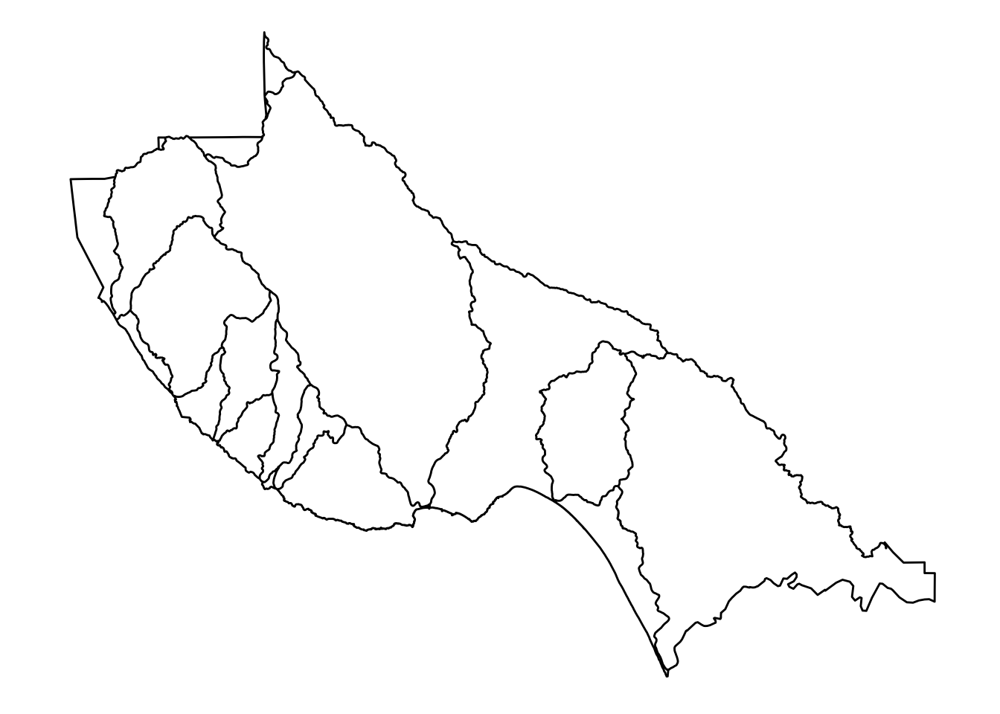
OK, that is pretty cool. See that these are, as we expect, polygons.
Let’s do the streams:
ggplot() +
ggspatial::geom_spatial(data = streams, colour = "blue") +
theme_void() +
coord_map()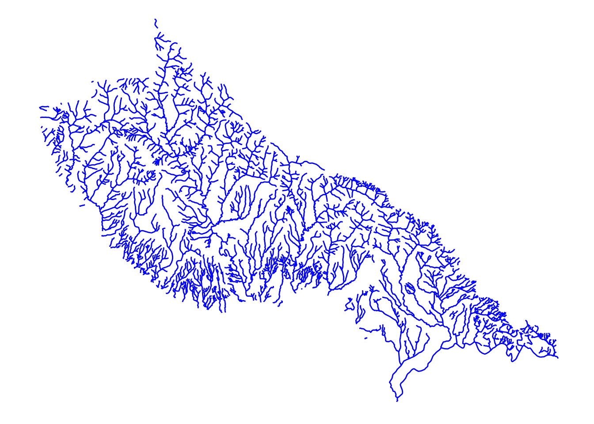
Yep, those are lines!
Finally, let’s plot the street lights, but we will put them over the top of the watersheds so that we have a little context for them.
ggplot() +
ggspatial::geom_spatial(data = watersheds, fill = NA, colour = "black") +
ggspatial::geom_spatial(data = lights, colour = "red", alpha = 0.4) +
theme_void() +
coord_map()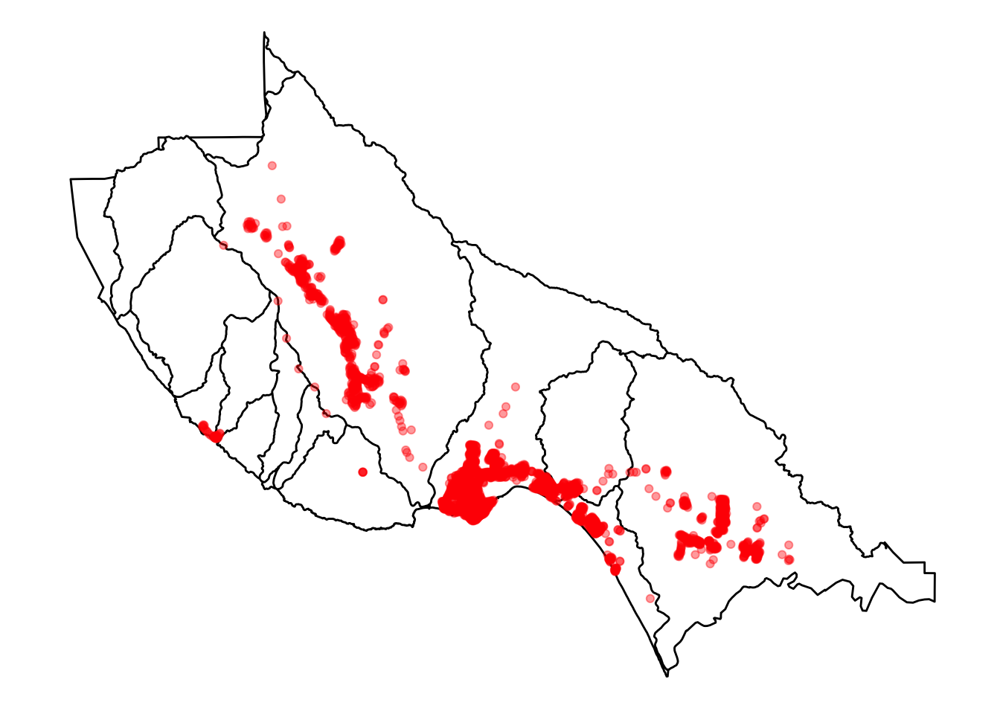
OK, those are points. That makes sense.
9.1.4 The Structure of Spatial*DataFrames
When we write Spatial*DataFrames we mean, collecively, SpatialPointsDataFrames, SpatialLinesDataFrames, and SpatialPolygonsDataFrames. These are the types of objects that R uses to store spatial information. Each of these is what is called an S4 object type. S4 objects are like lists in R, but instead of having elements you access with $, you have information in “slots” that you access with @. (What?! OK, don’t worry too much, you won’t typically ever have to access these slots using @, but I do want to use it to talk about the underlying structure of these beasts.)
First, let’s look at the slot names in these three different types of Spatial Data Frames:
# spatial points
slotNames(lights)## [1] "data" "coords.nrs" "coords" "bbox" "proj4string"# spatial lines
slotNames(streams)## [1] "data" "lines" "bbox" "proj4string"# spatial polygons
slotNames(watersheds)## [1] "data" "polygons" "plotOrder" "bbox" "proj4string"Aha! They all have:
datawhich is a data frame of information about each featurebboxwhich is information about the spatial extent of features in the fileproj4stringwhich holds information about the projection (coordinate reference system)
Then, the spatial points have coords while the spatial lines have lines and the spatial polygons have polygons.
Let us look more closely at the data slot in streams. This is just a data frame, and so we can look at it as a tibble:
as_tibble(streams@data)## # A tibble: 1,514 × 8
## OBJECTID STREAM_NM STREAMTYPE GNIS_ID ID ENABLED Named
## * <fctr> <fctr> <fctr> <fctr> <fctr> <fctr> <fctr>
## 1 1 Adams Creek INTERMITTENT NA 0 NA Yes
## 2 2 Alba Creek PERENNIAL 00218063 1 NA Yes
## 3 3 Amaya Creek PERENNIAL 00218217 2 NA Yes
## 4 4 Ano Nuevo Creek PERENNIAL 00254567 3 NA Yes
## 5 5 Aptos Creek PERENNIAL 00254571 4 NA Yes
## 6 6 Archibald Creek INTERMITTENT 00218350 5 NA Yes
## 7 7 Baldwin Creek PERENNIAL 00218614 6 NA Yes
## 8 8 Bates Creek PERENNIAL 00218726 7 NA Yes
## 9 9 Bean Creek PERENNIAL 00218782 8 NA Yes
## 10 10 Bennett Creek PERENNIAL 00219040 9 NA Yes
## # ... with 1,504 more rows, and 1 more variables: SHAPESTLen <dbl>And what about the lines slot? Well, that is a spatial data object that holds the coordinates that you would connect to make each line. This is a list of things, in which each element corresponds to a row in data.
9.1.5 Subsetting Spatial*DataFrames
If you want to pick out only some of the features in a Spatial*DataFrame, based on the values in the data, you can use subset. It works a little like filter from the tidyverse.
For an example, let’s see if we can keep only those stream segments that are classified as INTERMITTENT:
intermitt <- streams %>%
subset(., STREAMTYPE == "INTERMITTENT")While there were 1514 features in streams
length(streams)## [1] 1514In intermitt there are only 290:
length(intermitt)## [1] 290We can plot those to see if the spatial distribution of intermittent streams makes sense to us:
ggplot() +
ggspatial::geom_spatial(data = intermitt, colour = "orange") +
coord_map()## Converting coordinates to lat/lon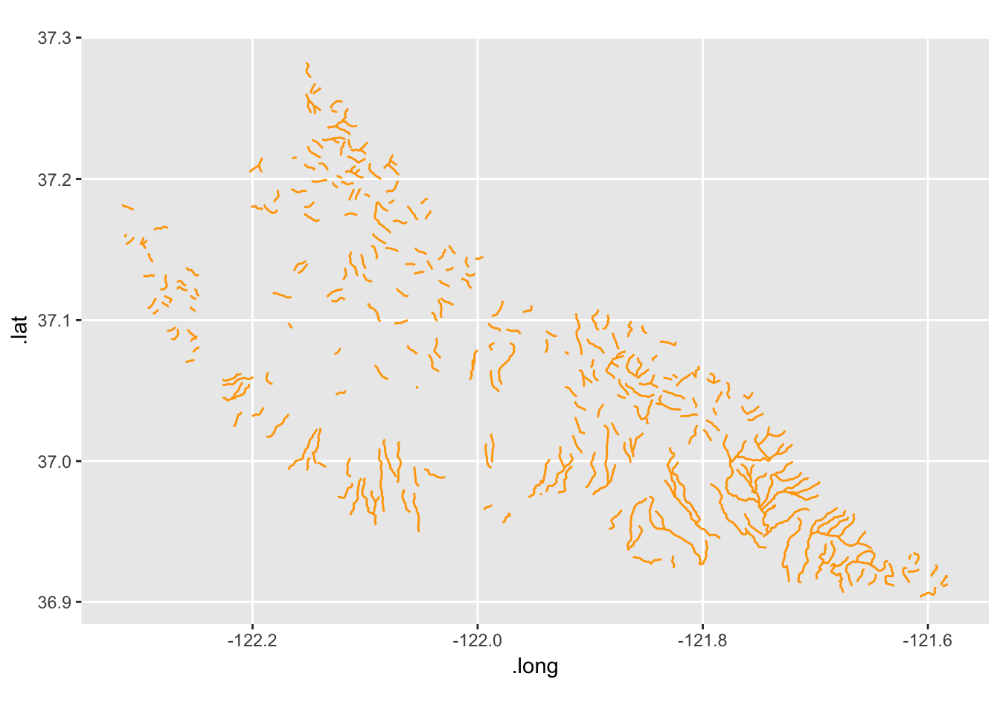
Yep, those are creeks that are mostly up higher in the watersheds.
9.2 Coordinate Reference Systems
I am not going to say too much about this. Anna Nisi directed me to a fantastic three-page primer on CRSs in R, and I direct people there.
ggspatial by default converts everything to lat/lon coordinates, so you can almost get away with ignoring it, but you should read about it.
To learn about the CRS of a Spatial*DataFrame you can do like this:
proj4string(streams)## [1] "+proj=lcc +lat_1=37.06666666666667 +lat_2=38.43333333333333 +lat_0=36.5 +lon_0=-120.5 +x_0=2000000 +y_0=500000.0000000002 +datum=NAD83 +units=us-ft +no_defs +ellps=GRS80 +towgs84=0,0,0"That shows us it is a Lambert Conformal Conic projection (“lcc”).
If we wanted to transform the coordinate reference system to something else, we can do like this:
streams_lat_lon <- spTransform(streams, CRS("+init=epsg:4326"))Check it:
proj4string(streams_lat_lon)## [1] "+init=epsg:4326 +proj=longlat +datum=WGS84 +no_defs +ellps=WGS84 +towgs84=0,0,0"Yep, that is right.
9.3 Plotting things with ggspatial
For a good primer on ggspatial find the README at its GitHub Page
The ggspatial package lets you plot spatial objects using a gpplot-like syntax. You can map aesthetics to the columns in the data slot. For example, let’s plot streams and color them by STREAMTYPE:
ggplot() +
ggspatial::geom_spatial(data = streams, mapping = aes(colour = STREAMTYPE)) +
coord_map()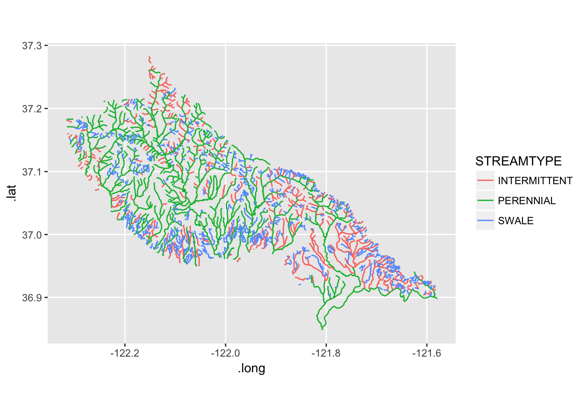
That’s cool.
Exercises
- Look at the
datafield ofwatersheds - Then plot the watersheds in different colors like this: 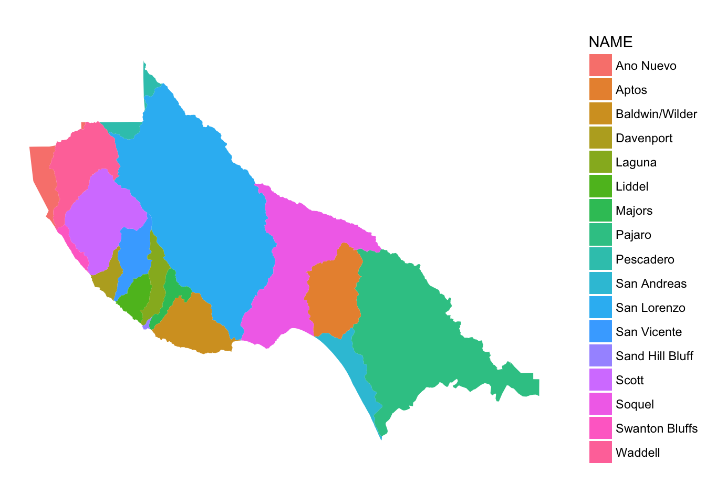
9.3.1 Want a background?
How about an open streets background layer? You can add it with a ggspatial::geom_osm() layer. Different types of maps are available:
# different types of OSM maps available:
rosm::osm.types()## [1] "osm" "opencycle"
## [3] "hotstyle" "loviniahike"
## [5] "loviniacycle" "hikebike"
## [7] "hillshade" "osmgrayscale"
## [9] "stamenbw" "stamenwatercolor"
## [11] "osmtransport" "thunderforestlandscape"
## [13] "thunderforestoutdoors" "cartodark"
## [15] "cartolight"So, let’s put a hillshade background on:
ggplot() +
geom_osm(type = "hillshade") +
ggspatial::geom_spatial(data = streams, mapping = aes(colour = STREAMTYPE), alpha = 0.5) +
coord_map() +
theme_void()## Converting coordinates to lat/lon## Zoom: 10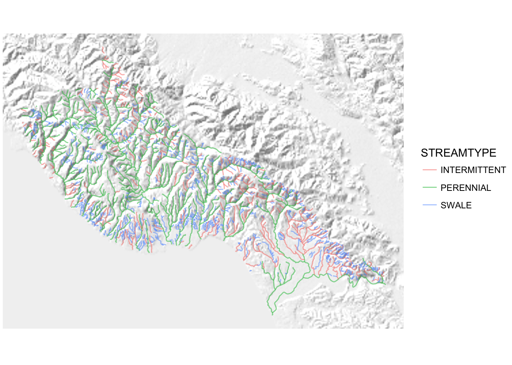
Cowabunga!
Using ggspatial with open street maps is a bit nicer than using ggmap because we are not bound to having square plots and it looks like it figures out the appropriate zoom for the backgound, etc. Behold the thin slice of shaded hillside background!
ggplot() +
geom_osm(type = "hillshade") +
ggspatial::geom_spatial(data = streams, mapping = aes(colour = STREAMTYPE), alpha = 0.5) +
coord_map(xlim = c(-122.3, -121.6), ylim = c(37.0, 37.1)) +
theme_void()## Converting coordinates to lat/lon## Zoom: 12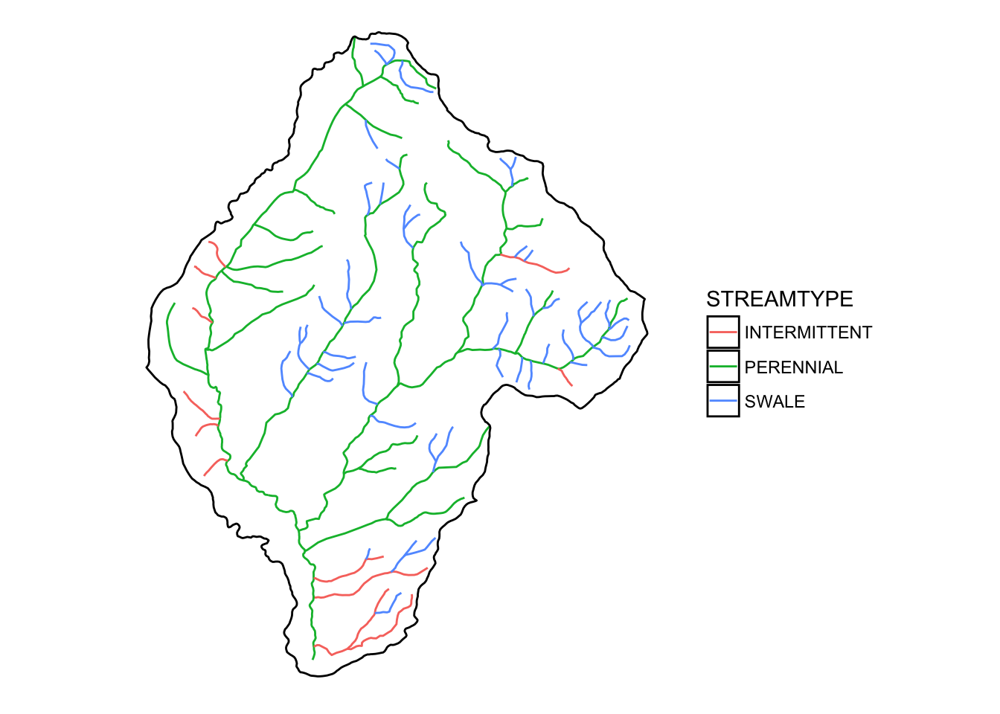
It is worth pointing out that you will very often use coord_map() when working with ggspatial, especially when using Open Street Maps layers under them.
Check this out, even faceting seems to work with ggspatial.
ggplot() +
geom_osm(type = "hillshade") +
ggspatial::geom_spatial(data = streams, mapping = aes(colour = STREAMTYPE), alpha = 0.5) +
coord_map() +
theme_void() +
facet_wrap(~ STREAMTYPE)## Converting coordinates to lat/lon## Zoom: 10
## Zoom: 10
## Zoom: 10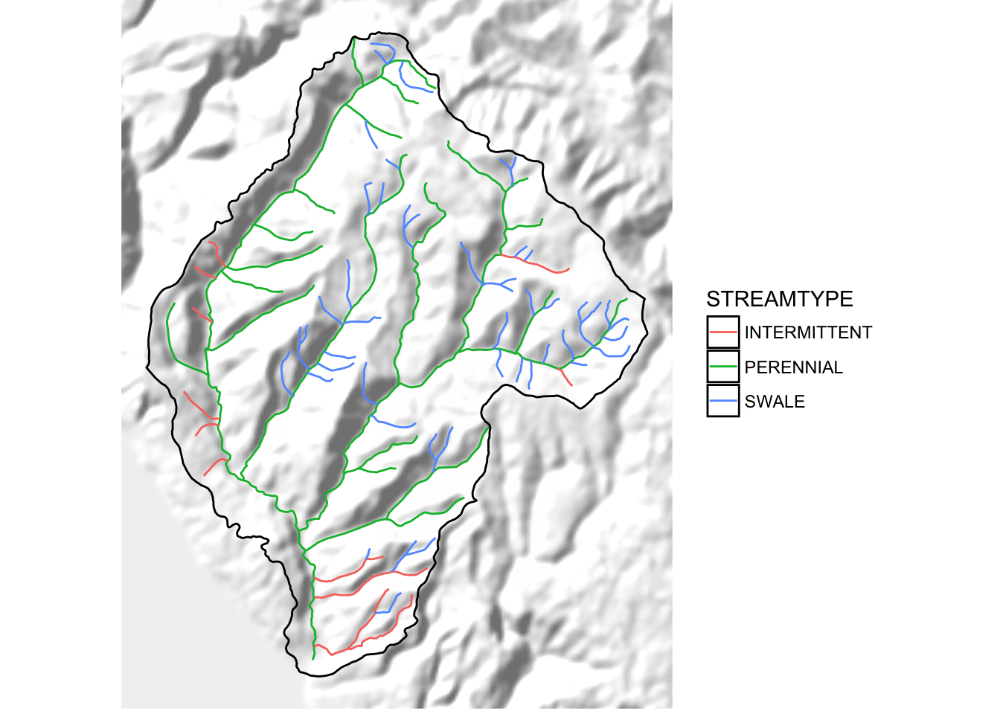
These background layers are received as a type of spatial data called a spatial raster. You can think of rasters as digital “images”—basically regular grids of pixels.
ggspatial has exploited one of ggplot’s facilities for efficiently plotting images to be able to efficiently plot rasters in the background. It also provides a function, geom_spraster() that let’s us do the same with spatial rasters from anywhere. This is a great feature that also let’s us plot rasters that have been projected to different coordinate reference systems. Before we get into this, let’s learn a little about rasters.
9.4 Spatial Raster Data
R has a fantastic package, called raster, written by Robert Hijmans (who was a collaborator with Kristen when they were both at Berkeley, check this out!). The raster package provides a nice interface for dealing with spatial raster types and doing a variety of operations with them.
We are going to start with an example: shaded relief of Carmel Bay avaiable through NOAA’s Digital Elevation Model Global Mosaic (Color Shaded Relief). I have already downloaded it to the inputs directory because, to be quite honest, obtaining it through R was not as straightforward as I would have hoped. This raster has multiple layers. It is a color image stored as a multi-layer (or “band”) file. Accordingly we can use the brick function to read it in as a “rasterBrick”:
carmel_bay <- raster::brick("inputs/carmel_bay_bathy.tif") Once we have done that we can read about it by printing it:
carmel_bay## class : RasterBrick
## dimensions : 1800, 1800, 3240000, 3 (nrow, ncol, ncell, nlayers)
## resolution : 8.333333e-05, 8.333333e-05 (x, y)
## extent : -122, -121.85, 36.5, 36.65 (xmin, xmax, ymin, ymax)
## coord. ref. : +proj=longlat +datum=WGS84 +no_defs +ellps=WGS84 +towgs84=0,0,0
## data source : /Users/eriq/Documents/git-repos/rep-res-eeb-2017/inputs/carmel_bay_bathy.tif
## names : carmel_bay_bathy.1, carmel_bay_bathy.2, carmel_bay_bathy.3
## min values : 0, 4, 0
## max values : 230, 242, 253That tells us a lot of useful things, like (from the “dimensions” line) there are 3 layers, each with 3.24 million cells, on a grid that is 1800 x 1800 cells. It also gives us information about the coordinate reference system (on the “coord. ref.” line).
That is all well and good. Now, let us see what that looks like. ggspatial has the function geom_spraster_rgb() for plotting the entire extent of a three-banded raster, interpreting the bands as red, green and blue.
ggplot() +
ggspatial::geom_spraster_rgb(carmel_bay) +
coord_fixed()
That is pretty, and could conceivably make a nice background for some of Diana’s rockfish plots.
There is another function in ggspatial called annotation_spraster that plots a raster, but does not change the plot boundaries. This is very useful if you have a lot of points that you wish to plot, and you want the plot boundaries to be sized to contain all your points, and you, accordingly, only want that particular piece of your background raster in the plot. Let’s see it in action by grabbing Diana’s rockfish data, but filtering it only to those points in the Stillwater Cove area.
sebastes_stillwater <- readRDS("inputs/sebastes_locations.rds") %>%
filter(LATITUDE_M > 36.55,
LATITUDE_M < 36.575,
LONGITUDE_M > -121.975,
LONGITUDE_M < -121.925)Then plot those. Here they are by themselves:
ggplot() +
geom_point(data = sebastes_stillwater, mapping = aes(x = LONGITUDE_M, y = LATITUDE_M)) +
coord_quickmap()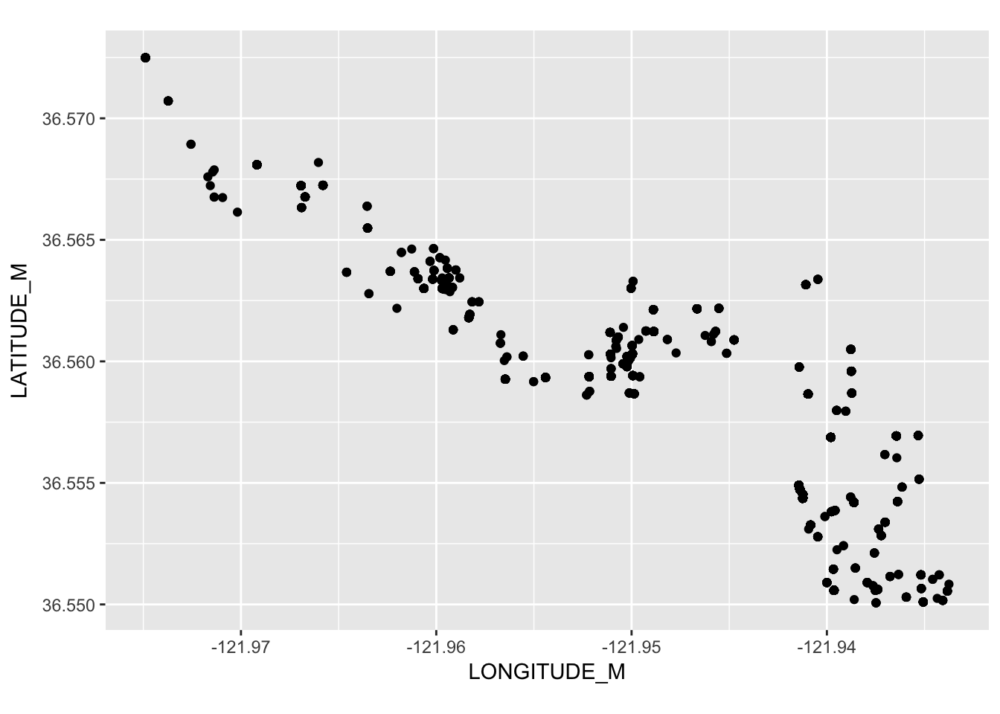
And here they are with the raster in the background:
ggplot() +
ggspatial::annotation_spraster(carmel_bay, interpolate = TRUE) +
geom_point(data = sebastes_stillwater, mapping = aes(x = LONGITUDE_M, y = LATITUDE_M),
colour = "yellow",
alpha = 0.3) +
coord_fixed()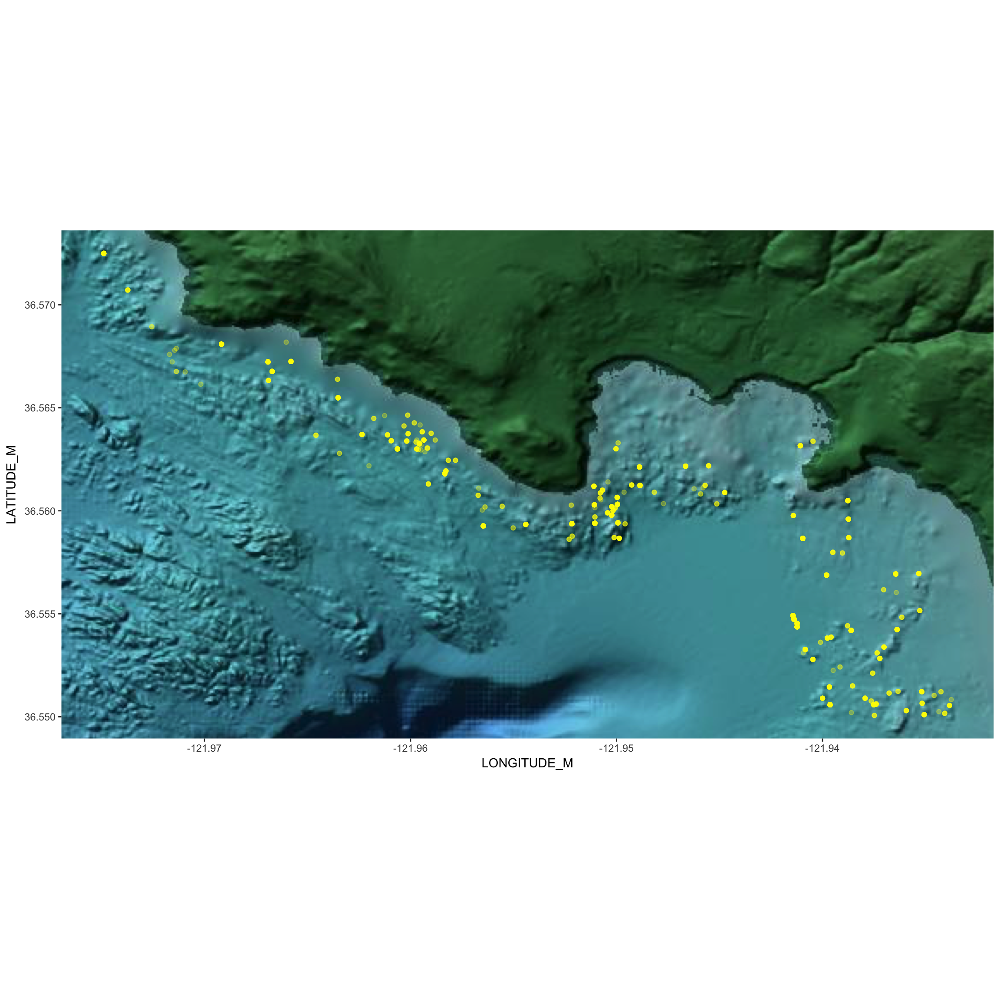
That is pretty cool. It might have been nice to have downloaded a higher resolution raster, which is available, but would have been quite large at the full, zoomed out scale.
One very important thing to note here is that when you are using ggspatial you can still plot regular ggplot2 geoms on top of it. We happened to have some points in a tibble (not, a SpatialPointsDataFrame) with Latitudes and Longitudes, so we just hucked ’em on there using geom_point.
9.5 Wrapping Up
Well, we merely scratched the surface of handling and plotting spatial data in R. There are a lot of resources out there:
- RSpatial Book/Tutorial This is an outstanding contribution from Robert Hijmans (it appears). It looks like it is still in progress, but it is quite complete and lucid.
- A CRAN tutorial on spatial data in R
- Melanie Frazier’s kick-ass into to coordinate reference systems
- R Spatial Cheatsheet loaded with good reminders of how to do things
- Another Cheat Sheet Great to read through to quickly get a sense of what is possible.
- ArcGIS_to_R_Spatial_CheatShee another cheat sheet well-suited to people who have used the ArcGIS point-and-click GUI.
- Remote sensing in R reference card Superb summary from the folks who bring you the book Remote Sensing and GIS for Ecologists Using Open Source Software which looks like it would be a superb read if you really wanted to dive deeply into this topic.
On top of that, we haven’t even touched on interactive maps with R. Those interested in that should check out Leaflet for R.